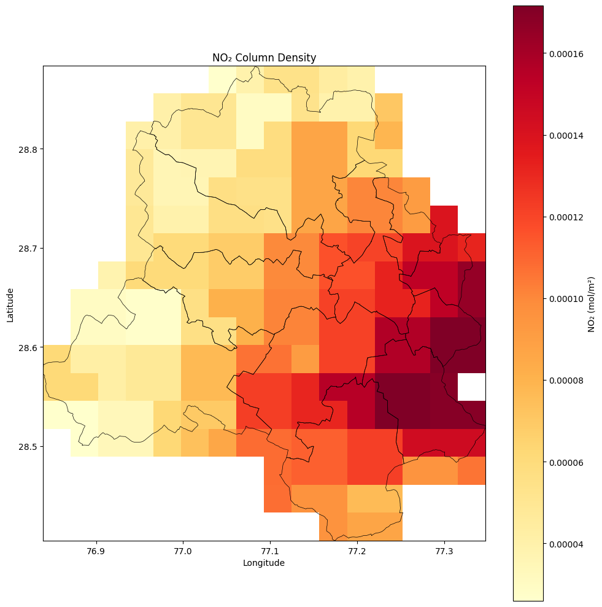

import rasterio
import numpy as np
import matplotlib.pyplot as plt
import matplotlib.colors as mcolors
from rasterio.plot import show
import geopandas as gpd3 Plotting Satellite Images
In this tutorial we will learn to plot a satellite image (TIFF file) from TROPOMI. More information and method to download this satellite image can be read in our Air Quality Course - Filling Gaps with Satellite Images
# Load TIFF
tif_path = "data/2026-03-07-00_00_2026-03-07-23_59_Sentinel-5P_NO2_NO2_(Raw).tiff"
with rasterio.open(tif_path) as src:
no2 = src.read(1) # first band
no2 = np.where(no2 == src.nodata, np.nan, no2) # mask nodata
extent = [src.bounds.left, src.bounds.right, src.bounds.bottom, src.bounds.top]
crs = src.crs# Load admin boundaries — reproject to match raster CRS
delhi_districts = gpd.read_file('data/DELHI_DISTRICTS.geojson').to_crs(crs)
delhi_districts.head()| dtname | stname | stcode11 | dtcode11 | year_stat | Shape_Length | Shape_Area | OBJECTID | test | Dist_LGD | State_LGD | geometry | |
|---|---|---|---|---|---|---|---|---|---|---|---|---|
| 0 | North | DELHI | 07 | 091 | 2011_c | 124517.060090 | 3.747820e+08 | 200 | 0 | 80 | 7 | POLYGON ((77.08264 28.88361, 77.0824 28.88381,... |
| 1 | North East | DELHI | 07 | 092 | 2011_c | 45699.265032 | 4.487668e+07 | 204 | 0 | 81 | 7 | POLYGON ((77.23185 28.77108, 77.22924 28.77104... |
| 2 | West | DELHI | 07 | 096 | 2011_c | 87103.576256 | 1.749203e+08 | 205 | 0 | 85 | 7 | POLYGON ((76.97446 28.70169, 76.97444 28.70208... |
| 3 | East | DELHI | 07 | 093 | 2011_c | 34869.902874 | 5.714965e+07 | 207 | 0 | 78 | 7 | POLYGON ((77.2927 28.65582, 77.28906 28.65989,... |
| 4 | South West | DELHI | 07 | 097 | 2011_c | 127028.154482 | 3.654339e+08 | 208 | 0 | 84 | 7 | POLYGON ((76.94906 28.66977, 76.94875 28.6698,... |
# Plot
fig, ax = plt.subplots(figsize=(10, 10))
im = ax.imshow(
no2,
extent=extent,
cmap='YlOrRd',
origin='upper',
vmin=np.nanpercentile(no2, 2), # clip outliers
vmax=np.nanpercentile(no2, 98),
)
# Admin boundary overlay
delhi_districts.boundary.plot(ax=ax, linewidth=0.5, color='black')
plt.colorbar(im, ax=ax, label='NO₂ (mol/m²)')
ax.set_title('NO₂ Column Density')
ax.set_xlabel('Longitude')
ax.set_ylabel('Latitude')
plt.tight_layout()
#plt.savefig('no2_map.png', dpi=150, bbox_inches='tight')
plt.show()